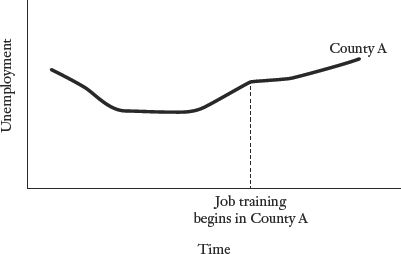
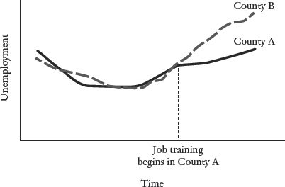

Will going to Harvard change your life?
Brilliant researchers in the social sciences are not brilliant because they can do complex calculations in their heads, or because they win more money on Jeopardy than less brilliant researchers do (though both these feats may be true). Brilliant researchers—those who appreciably change our knowledge of the world—are often individuals or teams who find creative ways to do “controlled” experiments. To measure the effect of any treatment or intervention, we need something to measure it against. How would going to Harvard affect your life? Well, to answer that question, we have to know what happens to you after you go to Harvard—and what happens to you after you don’t go to Harvard. Obviously we can’t have data on both. Yet clever researchers find ways to compare some treatment (e.g., going to Harvard) with the counterfactual, which is what would have happened in the absence of that treatment.
To illustrate this point, let’s ponder a seemingly simple question: Does putting more police officers on the street deter crime? This is a socially significant question, as crime imposes huge costs on society. If a greater police presence lowers crime, either through deterrence or by catching and imprisoning bad guys, then investments in additional police officers could have large returns. On the other hand, police officers are relatively expensive; if they have little or no impact on crime reduction, then society could make better use of its resources elsewhere (perhaps with investments in crime-fighting technology, such as surveillance cameras).
The challenge is that our seemingly simple question—what is the causal effect of more police officers on crime?—turns out to be very difficult to answer. By this point in the book, you should recognize that we cannot answer this question simply by examining whether jurisdictions with a high number of police officers per capita have lower rates of crime. Zurich is not Los Angeles. Even a comparison of large American cities will be deeply flawed; Los Angeles, New York, Houston, Miami, Detroit, and Chicago are all different places with different demographics and crime challenges.
Our usual approach would be to attempt to specify a regression equation that controls for these differences. Alas, even multiple regression analysis is not going to save us here. If we attempt to explain crime rates (our dependent variable) by using police officers per capita as an explanatory variable (along with other controls), we will have a serious reverse causality problem. We have a solid theoretical reason to believe that putting more police officers on the street will reduce crime, but it’s also possible that crime could “cause” police officers, in the sense that cities experiencing crime waves will hire more police officers. We could easily find a positive but misleading association between crime and police: the places with the most police officers have the worst crime problems. Of course, the places with lots of doctors also tend to have the highest concentration of sick people. These doctors aren’t making people sick; they are located in places where they are needed most (and at the same time sick people are moving to places where they can get appropriate medical care). I suspect that there are disproportionate numbers of oncologists and cardiologists in Florida; banishing them from the state will not make the retiree population healthier.
Welcome to program evaluation, which is the process by which we seek to measure the causal effect of some intervention—anything from a new cancer drug to a job placement program for high school dropouts. Or putting more police officers on the street. The intervention that we care about is typically called the “treatment,” though that word is used more expansively in a statistical context than in normal parlance. A treatment can be a literal treatment, as in some kind of medical intervention, or it can be something like attending college or receiving job training upon release from prison. The point is that we are seeking to isolate the effect of that single factor; ideally we would like to know how the group receiving that treatment fares compared with some other group whose members are identical in all other respects but for the treatment.
Program evaluation offers a set of tools for isolating the treatment effect when cause and effect are otherwise elusive. Here is how Jonathan Klick and Alexander Tabarrok, researchers at the University of Pennsylvania and George Mason University, respectively, studied how putting more police officers on the street affects the crime rate. Their research strategy made use of the terrorism alert system. Specifically, Washington, D.C., responds to “high alert” days for terrorism by putting more officers in certain areas of the city, since the capital is a natural terrorism target. We can assume that there is no relationship between street crime and the terrorism threat, so this boost in the D.C. police presence is unrelated to the conventional crime rate, or “exogenous.” The researchers’ most valuable insight was recognizing the natural experiment here: What happens to ordinary crime on terrorism “high alert” days?
The answer: The number of crimes committed when the terrorism threat was Orange (high alert and more police) was roughly 7 percent lower than when the terrorism threat level was Yellow (elevated alert but no extra law enforcement precautions). The authors also found that the decrease in crime was sharpest in the police district that gets the most police attention on high-alert days (because it includes the White House, the Capitol, and the National Mall). The important takeaway is that we can answer tricky but socially meaningful questions—we just have to be clever about it. Here are some of the most common approaches for isolating a treatment effect.
Randomized, controlled experiments. The most straightforward way to create a treatment and control group is to—wait for it—create a treatment and control group. There are two big challenges to this approach. First, there are many kinds of experiments that we cannot perform on people. This constraint (I hope) is not going away anytime soon. As a result, we can do controlled experiments on human subjects only when there is reason to believe that the treatment effect has a potentially positive outcome. This is often not the case (e.g., “treatments” like experimenting with drugs or dropping out of high school), which is why we need the strategies introduced in the balance of the chapter.
Second, there is a lot more variation among people than among laboratory rats. The treatment effect that we are testing could easily be confounded by other variations in the treatment and control groups; you are bound to have tall people, short people, sick people, healthy people, males, females, criminals, alcoholics, investment bankers, and so on. How can we ensure that differences across these other characteristics don’t mess up the results? I have good news: This is one of those rare instances in life in which the best approach involves the least work! The optimal way to create any treatment and control group is to distribute the study participants randomly across the two groups. The beauty of randomization is that it will generally distribute the non-treatment-related variables more or less evenly between the two groups—both the characteristics that are obvious, such as sex, race, age, and education and the nonobservable characteristics that might otherwise mess up the results.
Think about it: If we have 1,000 females in our prospective sample, then when we split the sample randomly into two groups, the most likely outcome is that 500 females will end up in each. Obviously we can’t expect that split exactly, but once again probability is our friend. The probability is low that one group will get a disproportionate number of women (or a disproportionate number of individuals with any other characteristic). For example, if we have a sample of 1,000 people, half of whom are women, there is less than a 1 percent chance of getting fewer than 450 women in one group or the other. Obviously the bigger the samples, the more effective randomization will be in creating two broadly similar groups.
Medical trials typically aspire to do randomized, controlled experiments. Ideally these clinical trials are double-blind, meaning that neither the patient nor the physician knows who is receiving the treatment and who is getting a placebo. This is obviously impossible with treatments such as surgical procedures (the heart surgeon will, one hopes, know which patients are getting bypass surgery). Even with surgical procedures, however, it may still be possible to keep patients from learning whether they are in the treatment or the control group. One of my favorite studies involved an evaluation of a certain kind of knee surgery to alleviate pain. The treatment group was given the surgery. The control group was given a “sham” surgery in which the surgeon made three small incisions in the knee and “pretended to operate.”* It turned out that the real surgery was no more effective than the sham surgery in relieving knee pain.1
Randomized trials can be used to test some interesting phenomena. For example, do prayers offered by strangers improve postsurgical outcomes? Reasonable people have widely varying views on religion, but a study published in the American Heart Journal conducted a controlled study that examined whether patients recovering from heart bypass surgery would have fewer postoperative complications if a large group of strangers prayed for their safe and speedy recovery.2 The study involved 1,800 patients and members of three religious congregations from across the country. The patients, all of whom received coronary bypass surgery, were divided into three groups: one group was not prayed for; one group was prayed for and was told so; the third group was prayed for, but the participants in that group were told that they might or might not receive prayers (thereby controlling for a prayer placebo effect). Meanwhile, the members of the religious congregations were told to offer prayers for specific patients by first name and the first initial of their last name (e.g., Charlie W.). The congregants were given latitude in how they prayed, so long as the prayer included the phrase “for a successful surgery with a quick, healthy recovery and no complications.”
And? Will prayer be the cost-effective solution to America’s health care challenges? Probably not. The researchers did not find any difference in the rate of complications within thirty days of surgery for those who were offered prayers compared with those who were not. Critics of the study pointed out a potential omitted variable: prayers coming from other sources. As the New York Times summarized, “Experts said the study could not overcome perhaps the largest obstacle to prayer study: the unknown amount of prayer each person received from friends, families, and congregations around the world who pray daily for the sick and dying.”
Experimenting on humans can get you arrested, or perhaps hauled off to appear before some international criminal tribunal. You should be aware of this. However, there is still room in the social sciences for randomized, controlled experiments involving “human subjects.” One famous and influential experiment is the Tennessee Project STAR experiment, which tested the effect of smaller class sizes on student learning. The relationship between class size and learning is hugely important. Nations around the world are struggling to improve educational outcomes. If smaller classes promote more effective learning, ceteris paribus, then society ought to invest in hiring more teachers to bring class sizes down. At the same time, hiring teachers is expensive; if students in smaller classes are doing better for reasons unrelated to the size of the class, then we could end up wasting an enormous amount of money.
The relationship between class size and student achievement is surprisingly hard to study. Schools with small classes generally have greater resources, meaning that both the students and the teachers are likely to be different from students and teachers in schools with larger classes. And within schools, smaller classes tend to be smaller for a reason. A principal may assign difficult students to a small class, in which case we might find a spurious negative association between smaller classes and student achievement. Or veteran teachers may choose to teach small classes, in which case the benefit of small classes may come from the teachers who choose to teach them rather than from the lower pupil-teacher ratio.
Beginning in 1985, Tennessee’s Project STAR did a controlled experiment to test the effects of smaller classes.3 (Lamar Alexander was governor of Tennessee at the time; he later went on to become secretary of education under President George H. W. Bush.) In kindergarten, students in seventy-nine different schools were randomly assigned to either a small class (13–17 students), a regular class (22–25 students), or a regular class with both a regular teacher and a teacher’s aide. Teachers were also randomly assigned to the different classrooms. Students stayed in the class type to which they were randomly assigned through third grade. Assorted life realities chipped away at the randomization. Some students entered the system in the middle of the experiment; others left. Some students were moved from class to class for disciplinary reasons; some parents lobbied successfully to have students moved to smaller classes. And so on.
Still, Project STAR remains the only randomized test of the effects of smaller classes. The results turned out to be statistically and socially significant. Overall, students in the small classes performed .15 standard deviations better on standardized tests than students in the regular-size classes; black students in small classes had gains that were twice as large. Now the bad news. The Project STAR experiment cost roughly $12 million. The study on the effect of prayer on postsurgical complications cost $2.4 million. The finest studies are like the finest of anything else: They cost big bucks.
Natural experiment. Not everybody has millions of dollars lying around to create a large, randomized trial. A more economical alternative is to exploit a natural experiment, which happens when random circumstances somehow create something approximating a randomized, controlled experiment. This was the case with our Washington, D.C., police example at the beginning of the chapter. Life sometimes creates a treatment and control group by accident; when that occurs, researchers are eager to leap on the results. Consider the striking but complicated link between education and longevity. People who get more education tend to live longer, even after controlling for things like income and access to health care. As the New York Times has noted, “The one social factor that researchers agree is consistently linked to longer lives in every country where it has been studied is education. It is more important than race; it obliterates any effects of income.”4 But so far, that’s just a correlation. Does more education, ceteris paribus, cause better health? If you think of the education itself as the “treatment,” will getting more education make you live longer?
This would appear to be a nearly impossible question to study, since people who choose to get more education are different from people who don’t. The difference between high school graduates and college graduates is not just four years of schooling. There could easily be some unobservable characteristics shared by people who pursue education that also explain their longer life expectancy. If that is the case, offering more education to those who would have chosen less education won’t actually improve their health. The improved health would not be a function of the incremental education; it would be a function of the kind of people who pursue that incremental education.
We cannot conduct a randomized experiment to solve this conundrum, because that would involve making some participants leave school earlier than they would like. (You try explaining to someone that he can’t go to college—ever—because he is in the control group.) The only possible test of the causal effect of education on longevity would be some kind of experiment that forced a large segment of the population to stay in school longer than its members might otherwise choose. That’s at least morally acceptable since we expect a positive treatment effect. Still, we can’t force kids to stay in school; that’s not the American way.
Oh, but it is. Every state has some kind of minimum schooling law, and at different points in history those laws have changed. That kind of exogenous change in schooling attainment—meaning that it’s not caused by the individuals being studied—is exactly the kind of thing that makes researchers swoon with excitement. Adriana Lleras-Muney, a graduate student at Columbia, saw the research potential in the fact that different states have changed their minimum schooling laws at different points in time. She went back in history and studied the relationship between when states changed their minimum schooling laws and later changes in life expectancy in those states (by trolling through lots and lots of census data). She still had a methodological challenge; if the residents of a state live longer after the state raises its minimum schooling law, we cannot attribute the longevity to the extra schooling. Life expectancy is generally going up over time. People lived longer in 1900 than in 1850, no matter what the states did.
However, Lleras-Muney had a natural control: states that did not change their minimum schooling laws. Her work approximates a giant laboratory experiment in which the residents of Illinois are forced to stay in school for seven years while their neighbors in Indiana can leave school after six years. The difference is that this controlled experiment was made possible by a historical accident—hence the term “natural experiment.”
What happened? Life expectancy of those adults who reached age thirty-five was extended by an extra one and a half years just by their attending one additional year of school.5 Lleras-Muney’s results have been replicated in other countries where variations in mandatory schooling laws have created similar natural experiments. Some skepticism is in order. We still do not understand the mechanism by which additional schooling leads to longer lives.
Nonequivalent control. Sometimes the best available option for studying a treatment effect is to create nonrandomized treatment and control groups. Our hope/expectation is that the two groups are broadly similar even though circumstances have not allowed us the statistical luxury of randomizing. The good news is that we have a treatment and a control group. The bad news is that any nonrandom assignment creates at least the potential for bias. There may be unobserved differences between the treatment and control groups related to how participants are assigned to one group or the other. Hence the name “nonequivalent control.”
A nonequivalent control group can still be a very helpful tool. Let’s ponder the question posed in the title of this chapter: Is there a significant life advantage to attending a highly selective college or university? Obviously the Harvard, Princeton, and Dartmouth graduates of the world do very well. On average, they earn more money and have more expansive life opportunities than students who attend less selective institutions. (A 2008 study by PayScale.com found that the median pay for Dartmouth graduates with ten to twenty years of work experience was $134,000, the highest of any undergraduate institution; Princeton was second with a median of $131,000.)6 As I hope you realize by this point, these impressive numbers tell us absolutely nothing about the value of a Dartmouth or Princeton education. Students who attend Dartmouth and Princeton are talented when they apply; that’s why they get accepted. They would probably do well in life no matter where they went to college.
What we don’t know is the treatment effect of attending a place like Harvard or Yale. Do the graduates of these elite institutions do well in life because they were hyper-talented when they walked onto the campus? Or do these colleges and universities add value by taking talented individuals and making them even more productive? Or both?
We cannot conduct a randomized experiment to answer this question. Few high school students would agree to be randomly assigned to a college; nor would Harvard and Dartmouth be particularly keen about taking the students randomly assigned to them. We appear to be left without any mechanism for testing the value of the treatment effect. Cleverness to the rescue! Economists Stacy Dale and Alan Krueger found a way to answer this question by exploiting* the fact that many students apply to multiple colleges.7 Some of those students are accepted at a highly selective school and choose to attend that school; others are accepted at a highly selective school but choose to attend a less selective college or university instead. Bingo! Now we have a treatment group (those students who attended highly selective colleges and universities) and a nonequivalent control group (those students who were talented enough to be accepted by such a school but opted to attend a less selective institution instead).†
Dale and Krueger studied longitudinal data on the earnings of both groups. This is not a perfect apples-and-apples comparison, and earnings are clearly not the only life outcome that matters, but their findings should assuage the anxieties of overwrought high school students and their parents. Students who attended more selective colleges earned roughly the same as students of seemingly similar ability who attended less selective schools. The one exception was students from low-income families, who earned more if they attended a selective college or university. The Dale and Krueger approach is an elegant way to sort out the treatment effect (spending four years at an elite institution) from the selection effect (the most talented students are admitted to those institutions). In a summary of the research for the New York Times, Alan Krueger indirectly answered the question posed in the title of this chapter, “Recognize that your own motivation, ambition, and talents will determine your success more than the college name on your diploma.”8
Difference in differences. One of the best ways to observe cause and effect is to do something and then see what happens. This is, after all, how infants and toddlers (and sometimes adults) learn about the world. My children were very quick to learn that if they hurled pieces of food across the kitchen (cause), the dog would race eagerly after them (effect). Presumably the same power of observation can help inform the rest of life. If we cut taxes and the economy improves, then the tax cuts must have been responsible.
Maybe. The enormous potential pitfall with this approach is that life tends to be more complex than throwing chicken nuggets across the kitchen. Yes, we may have cut taxes at a specific point in time, but there were other “interventions” unfolding during roughly the same stretch: More women were going to college, the Internet and other technological innovations were raising the productivity of American workers, the Chinese currency was undervalued, the Chicago Cubs fired their general manager, and so on. Whatever happened after the tax cut cannot be attributed solely to the tax cut. The challenge with any “before and after” kind of analysis is that just because one thing follows another does not mean that there is a causal relationship between the two.
A “difference in differences” approach can help us identify the effects of some intervention by doing two things. First, we examine the “before” and “after” data for whatever group or jurisdiction has received the treatment, such as the unemployment figures for a county that has implemented a job training program. Second, we compare those data with the unemployment figures over the same time period for a similar county that did not implement any such program.
The important assumption is that the two groups used for the analysis are largely comparable except for the treatment; as a result, any significant difference in outcomes between the two groups can be attributed to the program or policy being evaluated. For example, suppose that one county in Illinois implements a job training program to combat high unemployment. Over the ensuing two years, the unemployment rate continues to rise. Does that make the program a failure? Who knows?
Effect of Job Training on Unemployment in County A

Other broad economic forces may be at work, including the possibility of a prolonged economic slump. A difference-in-differences approach would compare the change in the unemployment rate over time in the county we are evaluating with the unemployment rate for a neighboring county with no job training program; the two counties must be similar in all other important ways: industry mix, demographics, and so on. How does the unemployment rate in the county with the new job training program change over time relative to the county that did not implement such a program? We can reasonably infer the treatment effect of the program by comparing the changes in the two counties over the period of study—the “difference in differences.” The other county in this study is effectively acting as a control group, which allows us to take advantage of the data collected before and after the intervention. If the control group is good, it will be exposed to the same broader forces as our treatment group. The difference-in-differences approach can be particularly enlightening when the treatment initially appears ineffective (unemployment is higher after the program is implemented than before), yet the control group shows us that the trend would have been even worse in the absence of the intervention.
Effect of Job Training on Unemployment in County A, with County B as a Comparison

Discontinuity analysis. One way to create a treatment and control group is to compare the outcomes for some group that barely qualified for an intervention or treatment with the outcomes for a group that just missed the cutoff for eligibility and did not receive the treatment. Those individuals who fall just above and just below some arbitrary cutoff, such as an exam score or a minimum household income, will be nearly identical in many important respects; the fact that one group received the treatment and the other didn’t is essentially arbitrary. As a result, we can compare their outcomes in ways that provide meaningful results about the effectiveness of the relevant intervention.
Suppose a school district requires summer school for struggling students. The district would like to know whether the summer program has any long-term academic value. As usual, a simple comparison between the students who attend summer school and those who do not would be worse than useless. The students who attend summer school are there because they are struggling. Even if the summer school program is highly effective, the participating students will probably still do worse in the long run than the students who were not required to take summer school. What we want to know is how the struggling students perform after taking summer school compared with how they would have done if they had not taken summer school. Yes, we could do some kind of controlled experiment in which struggling students are randomly selected to attend summer school or not, but that would involve denying the control group access to a program that we think would be helpful.
Instead, the treatment and control groups are created by comparing those students who just barely fell below the threshold for summer school with those who just barely escaped it. Think about it: the students who fail a midterm are appreciably different from students who do not fail the midterm. But students who get a 59 percent (a failing grade) are not appreciably different from those students who get a 60 percent (a passing grade). If those who fail the midterm are enrolled in some treatment, such as mandatory tutoring for the final exam, then we would have a reasonable treatment and control group if we compared the final exam scores of those who barely failed the midterm (and received tutoring) with the scores of those who barely passed the midterm (and did not get tutoring).
This approach was used to determine the effectiveness of incarceration for juvenile offenders as a deterrent to future crime. Obviously this kind of analysis cannot simply compare the recidivism rates of juvenile offenders who are imprisoned with the recidivism rates for juvenile offenders who received lighter sentences. The juvenile offenders who are sent to prison typically commit more serious crimes than the juvenile offenders who receive lighter sentences; that’s why they go to prison. Nor can we create a treatment and control group by distributing prison sentences randomly (unless you want to risk twenty-five years in the big house the next time you make an illegal right turn on red). Randi Hjalmarsson, a researcher now at the University of London, exploited rigid sentencing guidelines for juvenile offenders in the state of Washington to gain insight into the causal effect of a prison sentence on future criminal behavior. Specifically, she compared the recidivism rate for those juvenile offenders who were “just barely” sentenced to prison with the recidivism rate for those juveniles who “just barely” got a pass (which usually involved a fine or probation).9
The Washington criminal justice system creates a grid for each convicted offender that is used to administer a sentence. The x-axis measures the offender’s prior adjudicated offenses. For example, each prior felony counts as one point; each prior misdemeanor counts as one-quarter point. The point total is rounded down to a whole number (which will matter in a moment). Meanwhile, the y-axis measures the severity of the current offense on a scale from E (least serious) to A+ (most serious). A convicted juvenile’s sentence is literally calculated by finding the appropriate box on the grid: An offender with two points’ worth of prior offenses who commits a Class B felony will receive fifteen to thirty-six months in a juvenile jail. A convicted offender with only one point worth of prior offenses who commits the same crime will not be sent to jail. That discontinuity is what motivated the research strategy. Hjalmarsson compared the outcomes for convicted offenders who fell just above and below the threshold for a jail sentence. As she explains in the paper, “If there are two individuals with a current offense class of C+ and [prior] adjudication scores of 2¾ and 3, then only the latter individual will be sentenced to state incarceration.”
For research purposes, those two individuals are essentially the same—until one of them goes to jail. And at that point, their behavior does appear to diverge sharply. The juvenile offenders who go to jail are significantly less likely to be convicted of another crime (after they are released from jail).
We care about what works. This is true in medicine, in economics, in business, in criminal justice—in everything. Yet causality is a tough nut to crack, even in cases where cause and effect seems stunningly obvious. To understand the true impact of a treatment, we need to know the “counterfactual,” which is what would have happened in the absence of that treatment or intervention. Often the counterfactual is difficult or impossible to observe. Consider a nonstatistics example: Did the U.S. invasion of Iraq make America safer?
There is only one intellectually honest answer: We will never know. The reason we will never know is that we do not know—and cannot know—what would have happened if the United States had not invaded Iraq. True, the United States did not find weapons of mass destruction. But it is possible that on the day after the United States did not invade Iraq Saddam Hussein could have climbed into the shower and said to himself, “I could really use a hydrogen bomb. I wonder if the North Koreans will sell me one?” After that, who knows?
Of course, it’s also possible that Saddam Hussein could have climbed into that same shower on the day after the United States did not invade Iraq and said to himself, “I could really use—” at which point he slipped on a bar of soap, hit his head on an ornate marble fixture, and died. In that case, the world would have been rid of Saddam Hussein without the enormous costs associated with the U.S. invasion. Who knows what would have happened?
The purpose of any program evaluation is to provide some kind of counterfactual against which a treatment or intervention can be measured. In the case of a randomized, controlled experiment, the control group is the counterfactual. In cases where a controlled experiment is impractical or immoral, we need to find some other way of approximating the counterfactual. Our understanding of the world depends on finding clever ways to do that.
* The participants did know that they were participating in a clinical trial and might receive the sham surgery.
* Researchers love to use the word “exploit.” It has a specific meaning in terms of taking advantage of some data-related opportunity. For example, when researchers find some natural experiment that creates a treatment and control group, they will describe how they plan to “exploit the variation in the data.”
† There is potential for bias here. Both groups of students are talented enough to get into a highly selective school. However, one group of students chose to go to such a school, and the other group did not. The group of students who chose to attend a less selective school may be less motivated, less hardworking, or different in some other ways that we cannot observe. If Dale and Krueger had found that students who attend a highly selective school had higher lifetime earnings than students who were accepted at such a school but went to a less selective college instead, we still could not be certain whether the difference was due to the selective school or to the kind of student who opted to attend such a school when given a choice. This potential bias turns out to be unimportant in the Dale and Krueger study, however, because of its direction. Dale and Krueger find that the students who attended highly selective schools did not earn significantly more in life than students who were accepted but went elsewhere despite the fact that the students who declined to attend a highly selective school may have had attributes that caused them to earn less in life apart from their education. If anything, the bias here causes the findings to overstate the pecuniary benefits of attending a highly selective college—which turn out to be insubstantial anyway.